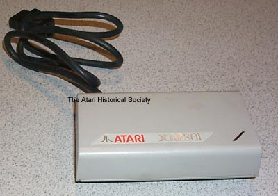

The Atari XM301 Modem was Atari's third 300 Baud modem to be produced.
The Atari XM301 was basically a smaller repackaged version of the Atari
835/1030 modems produced by Atari, Inc. The Modem required
no power, but instead received power from the SIO (Serial I/O) connection
cable. Like the Atari 410 cassette recorders the XM301 modem
had no SIO daisy chain port on it, so it had to be at the end of the computers
SIO chain. The modem had 1 telco connector on it and an LED
for status. It was a simple, low cost connection device
for Atari 8-bit home computers.
Note: Due to the lack of a 12v+ line on the Atari 1200XL line of computers, the XM301 modem would not work on them with a simple modification to the SIO port on the 1200XL to restore this voltage line.